운전하고 싶은 플래그십, 캐딜락 CT6
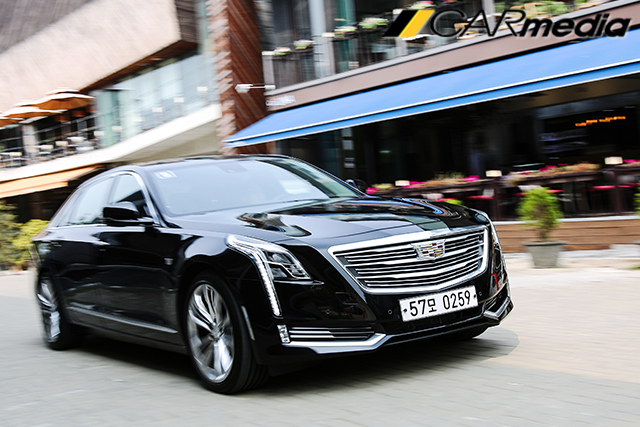【카미디어】 윤지수 기자 = 플래그십 세단은 차분하고 편안한 게 ‘미덕’이다. 그래서 플래그십 세단들을 운전 재미를 포기하고, 미끄러지듯이 달린다. 그런데 CT6는 사뭇 달랐다. 이 차는 팔팔하다. 웅장한 소리를 내며, 활기차게 달린다. 덕분에 운전자는 미소가 번지지만, 뒷좌석 회장님은 표정이 굳어진다. CT6는 ‘쇼퍼드리븐’의 탈을 쓴 ‘오너드리븐’이다.
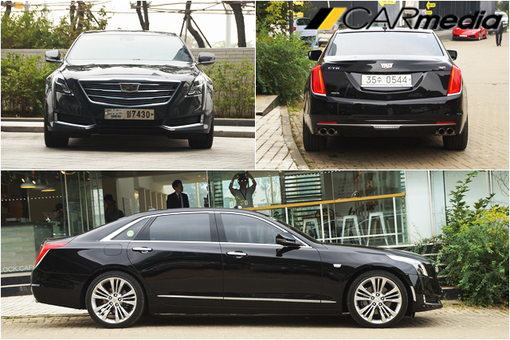 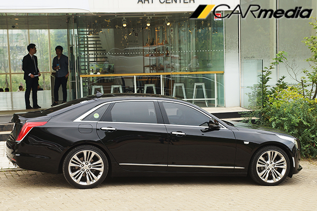CT6는 ‘비율’이 멋지다. 5m가 넘는 대형차를 역동적으로 다듬었다. 앞바퀴를 앞으로 최대한 밀었고, 앞 유리를 뒤쪽으로 당겼다. 그리고 뒤쪽을 살짝 들어 올려, 달려나갈 듯한 ‘자세’를 완성했다. 덕분에 큰 덩치에도 불구하고 가뿐하게 달릴 것 같은 인상이다.
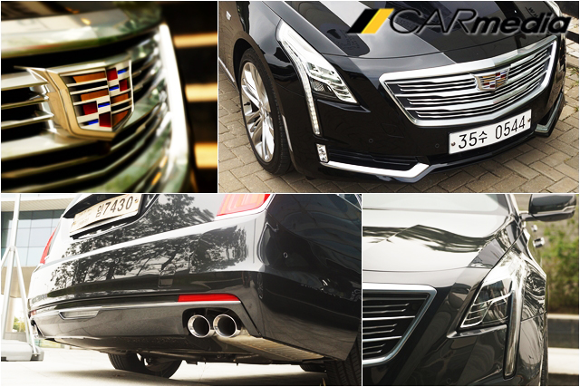반면, ‘디테일’은 ‘회장님 차’ 같다. 권위적인 세로형 헤드램프와 큼직한 방패모양 그릴, 길고 얇은 테일램프 등 고급스러운 디테일이 더해졌다. 그래서 ‘쇼퍼드리븐(기사를 두고 타는 차)’처럼 보인다. 그런데 배기파이프가 무려 네 개다. 범퍼에 모양만 낸 ‘가짜’가 아닌, 진짜 배기파이프다. 이 차의 ‘진짜 성격’이 드러난 부분이다.
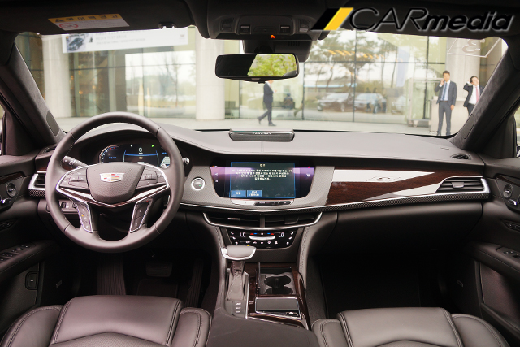안으로 들어서면, 캐딜락 답지 않은 진중한 분위기에 놀란다. 다른 캐딜락의 검은색 플라스틱 장식들이 사리지고, 부드러운 가죽으로 뒤덮였다. 대시보드 구성도 확연히 다르다. 세로형으로 구성된 다른 캐딜락과 달리 CT6는 가로로 긴 스타일의 대시보드를 적용했다. 덕분에 한층 깔끔하고 우아하다.
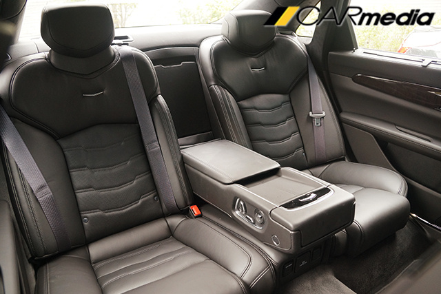뒤쪽은 ‘쇼퍼드리븐’으로 손색이 없다. ‘사장님’처럼 거만하게 앉아 손가락으로 의자를 조절하고, 비행기 ‘비즈니스 클래스’처럼 리모컨으로 모니터도 조절할 수 있다. 게다가 ‘안마’까지 받을 수 있다. 안마 기능은 여태껏 느껴본 자동차 시트의 안마 기능 중 가장 적극적이다. 강한 힘으로 ‘꾹꾹’ 눌러주는데, 제법 시원하다.
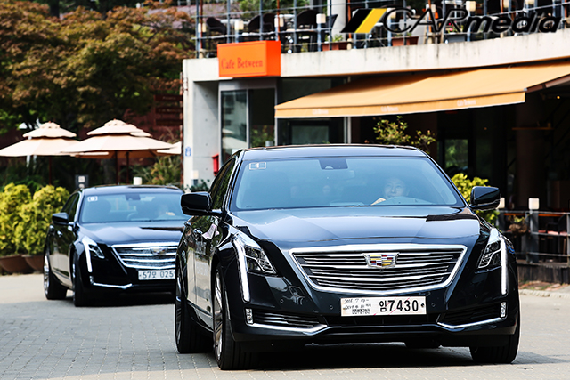CT6는 서서히 다닐 때 모두가 편안했다. 6기통 3.6리터 엔진은 ‘조심조심’ 차체를 이끌었고, 3,109mm에 달하는 긴 휠베이스는 여유롭게 충격을 흡수했다. 게다가 ‘방음’도 잘 되어있어, 귀도 편안하다.
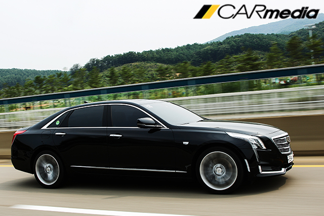그런데 가속페달에 힘을 주자, 차가 돌변했다. 조용하던 엔진이 ‘가면’을 벗어던지고 웅장한 배기음을 토해낸다. 그저 그런 6기통 엔진 소리가 아니다. ATS-V에서 들었던 가슴 ‘뻥’ 뚫리는 소리다. CT6의 예상치 못한 ‘선물’에 입가에 미소가 지어졌다. 지루한 대형 세단 시승이 갑자기 유쾌한 스포츠 세단 시승으로 바뀌었다.
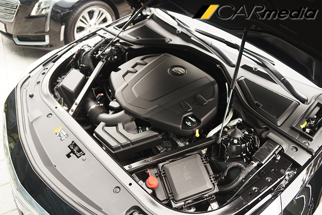웅장한 소리는 호쾌한 가속으로 이어졌다. 3.6리터 엔진은 대 배기량 자연흡기 엔진답게 처음부터 끝까지 속 시원하게 속도를 붙인다. 고속에서 힘이 빠지는 터보 엔진과 달리 계기반 바늘이 시속 200km까지 단숨에 올라간다.
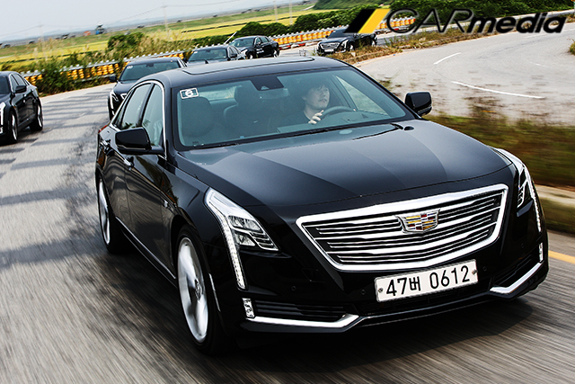‘하체’도 스포츠 세단처럼 팽팽하다. 빠른 속도로 코너에 진입해도, 안정적으로 네 바퀴를 붙들며 돌아나간다. 노면의 급작스러운 충격에도 자세를 흩트리지 않고 곧바로 추스른다. 팽팽한 주행감에 이리저리 운전대를 돌리며 내달리자, 뒤쪽 승객의 표정이 점점 굳어진다.
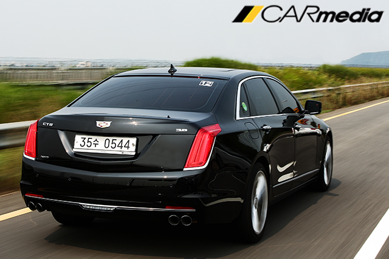시승을 마치고 돌아오는 길에 뒷좌석에 앉아 승차감을 느꼈다. 그런데 운전할 때만큼 만족스럽지 않다. 엉덩이로 계속해서 노면의 진동이 올라오고, 서스펜션이 제대로 거르지 못한 충격이 실내에 고스란히 들어온다. 어째서 뒤쪽 승객의 표정이 굳어졌는지 알겠다. 물론 일반적인 세단보단 훨씬 나은 승차감이지만, 독일 플래그십 세단의 기준에는 못 미쳤다.
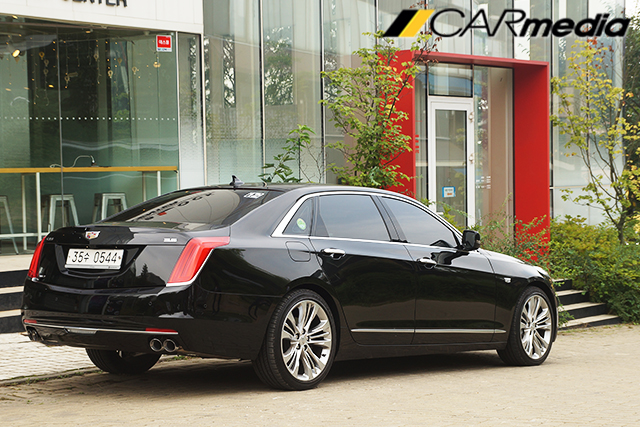급가속과 급출발을 일삼은 시승 중 연비는 리터당 약 8km 대 정도 나왔다. 3.6리터 엔진에 4륜 구동이 들어가고, 다소 가혹한 주행 환경이었던 걸 생각하면, 썩 괜찮은 효율이다. 차체의 64%를 알루미늄으로 만들어 무게를 1,950kg까지 줄인 게 연비에 좋은 영향을 미친 것으로 보인다. 참고로 CT6의 공인 연비는 리터당 8.2km(도심 7.2km/L, 고속 9.9km/L)다.
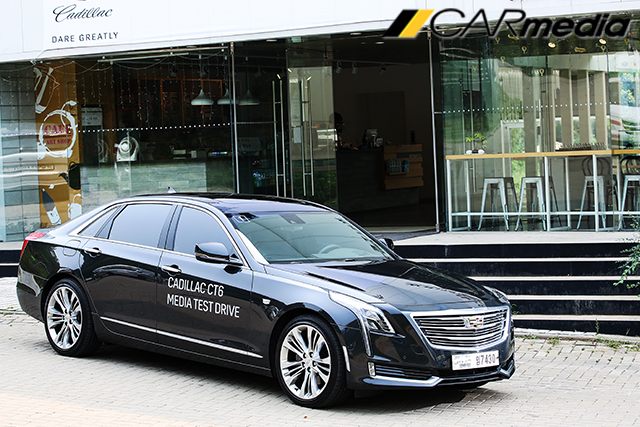CT6는 지루한 플래그십 세단이 아니다. 가벼운 차체와 강력한 엔진으로 날쌔게 달릴 줄 아는 역동적인 플래그십 세단이다. ‘달리기’위해, 편안함은 조금 희생했지만, 대신 운전 재미를 얻었다. 그래서 뒤에서 편안하게 탈 ‘쇼퍼드리븐’으로는 다소 어색하고, 직접 운전하는 ‘오너드리븐’으로는 적격이다. 가격도 프리미엄 7,880만원, 플래티넘 9,580만원으로 직접적인 경쟁 상대는 S클래스나 7시리즈 같은 플래그십 세단이 아니라, E클래스나 5시리즈 같은 ‘오너드리븐’ 세단이기도 하다. 이 차들과 비교하면 앞서 언급한 CT6의 불만이 의미 없어지긴 한다.